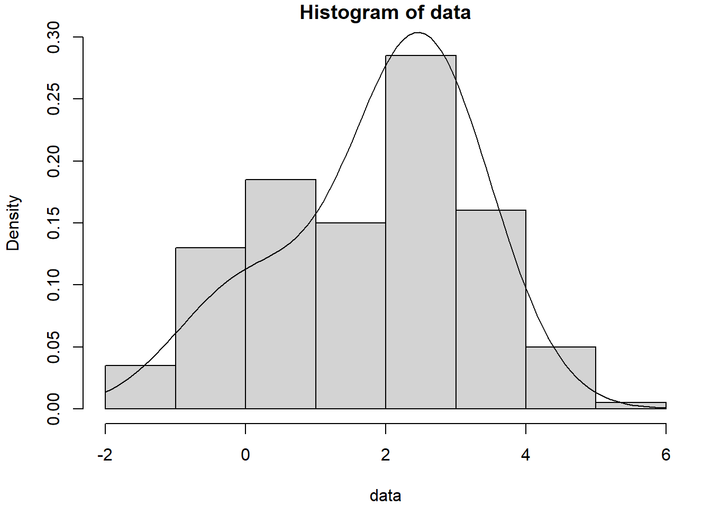
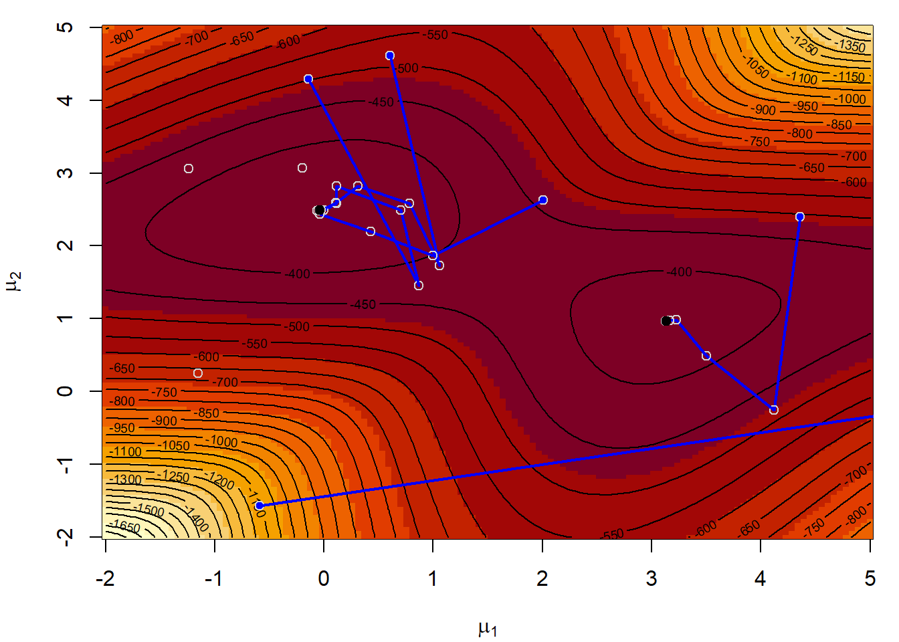
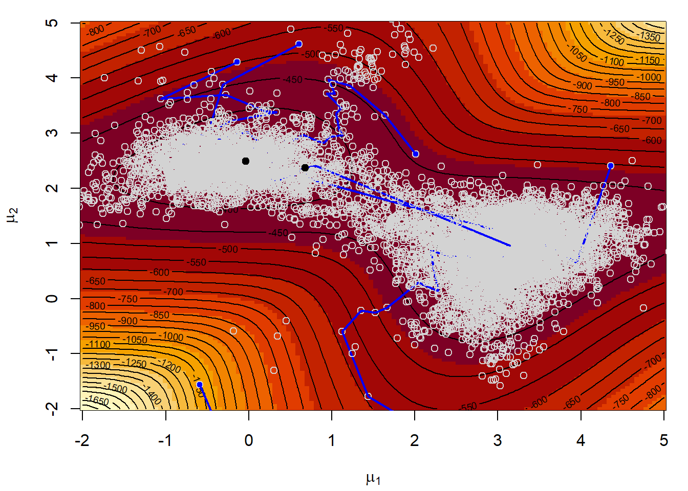
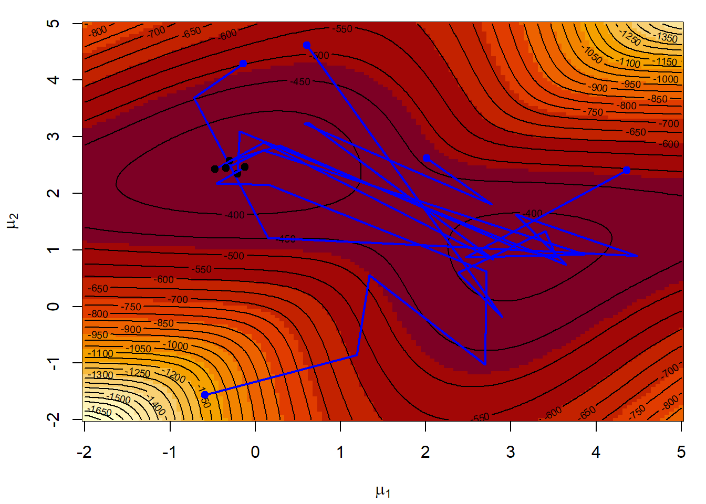
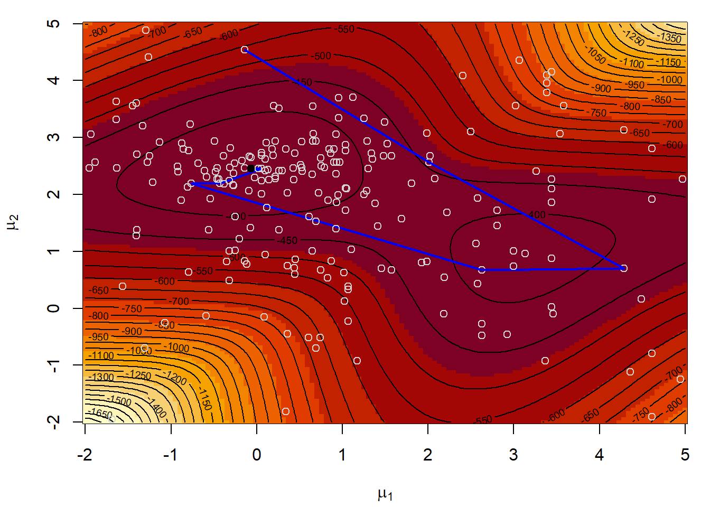

7.3 Optimización Monte Carlo
Supongamos que estamos interesados en la minimización de una función: \[\underset{\mathbf{x}\in D}{\min }f(\mathbf{x}).\]
Hay una gran cantidad de algoritmos numéricos para resolver problemas de optimización no lineal multidimensional, por ejemplo los basados en el método de Newton-Raphson (implementados en la función nlm, entre otras).
La idea original consiste en buscar los ceros de su primera derivada (o del gradiente) empleando una aproximación iterativa: \[\mathbf{x}_{i+1} = \mathbf{x}_i-[Hf(\mathbf{x}_i)]^{-1}\nabla f(\mathbf{x}_i),\] donde \(Hf(\mathbf{x}_i)\) es el hessiano de la función (matriz de segundas derivadas) y \(\nabla f(\mathbf{x}_i)\) el gradiente (vector de primeras derivadas). Estos métodos normalmente funcionan muy bien cuando la función objetivo no tiene mínimos locales (ideal \(f\) cuadrática). Los resultados obtenidos pueden ser muy malos en caso contrario (especialmente en el caso multidimensional) y dependen en gran medida del punto inicial29 Un ejemplo donde es habitual que aparezcan este tipo de problemas es en la estimación por máxima verosimilitud (la función objetivo puede ser multimodal).
Ejemplo 7.6 (Estimación por máxima verosimilitud mediante un algoritmo de Newton)
La mixtura de distribuciones normales: \[\frac1{4}N(\mu_1,1)+\frac{3}{4}N(\mu_2,1),\] tiene una función de verosimilitud asociada bimodal. Generaremos una muestra de 200 valores de esta distribución con \(\mu_1=0\) y \(\mu_2=2.5\), construiremos la correspondiente función de verosimilitud y la representaremos gráficamente.
Obtención de la muestra (simulación mixtura dos normales):
nsim <- 200
mu1 <- 0
mu2 <- 2.5
sd1 <- sd2 <- 1
set.seed(12345)
p.sim <- rbinom(nsim, 1, 0.25)
data <- rnorm(nsim, mu1*p.sim + mu2*(1-p.sim), sd1*p.sim + sd2*(1-p.sim))
hist(data, freq = FALSE, breaks = "FD", ylim = c(0, 0.3))
curve(0.25 * dnorm(x, mu1, sd1) + 0.75 * dnorm(x, mu2, sd2), add = TRUE)
Podemos obtener la estimación por máxima verosimilitud de los parámetros empleando la rutina nlm para minimizar el logaritmo (negativo) de la función de verosimilitud:
like <- function(mu)
-sum(log((0.25 * dnorm(data, mu[1], sd1) + 0.75 * dnorm(data, mu[2], sd2))))
# NOTA: Pueden aparecer NA/Inf por log(0)Si queremos capturar los valores en los que se evalúa esta función, podemos proceder de forma similar a como se describe en el capítulo Function operators de la primera edición del libro “Advanced R” de Hadley Wickham: “Behavioural FOs leave the inputs and outputs of a function unchanged, but add some extra behaviour”.
tee <- function(f) {
function(...) {
input <- if(nargs() == 1) c(...) else list(...)
output <- f(...)
# Hacer algo ...
# ... con output e input
return(output)
}
}En este caso queremos representar los puntos en los que el algoritmo de optimización evalúa la función objetivo (especialmente como evoluciona el valor óptimo)
tee.optim2d <- function(f) {
best.f <- Inf # Suponemos que se va a minimizar (opción por defecto)
best.par <- c(NA, NA)
function(...) {
input <- c(...)
output <- f(...)
## Hacer algo ...
points(input[1], input[2], col = "lightgray")
if(best.f > output) {
lines(rbind(best.par, input), lwd = 2, col = "blue")
best.f <<- output
best.par <<- input
# points(best.par[1], best.par[2], col = "blue", pch = 20)
# cat("par = ", best.par, "value = ", best.f, "\n")
}
## ... con output e input
return(output)
}
}Representar la superficie del logaritmo de la verosimilitud,
los puntos iniciales y las iteraciones en la optimización numérica con nlm:
mmu1 <- mmu2 <- seq(-2, 5, length = 128)
lli <- outer(mmu1, mmu2, function(x,y) apply(cbind(x,y), 1, like))
par(mar = c(4, 4, 1, 1))
image(mmu1, mmu2, -lli, xlab = expression(mu[1]), ylab = expression(mu[2]))
contour(mmu1, mmu2, -lli, nlevels = 50, add = TRUE)
# Valores iniciales aleatorios
nstarts <- 5
set.seed(1)
starts <- matrix(runif(2*nstarts, -2, 5), nrow = nstarts)
points(starts, col = "blue", pch = 19)
# Minimización numérica con nlm
for (j in 1:nstarts){
# Normalmente llamaríamos a nlm(like, start)
res <- nlm(tee.optim2d(like), starts[j, ]) # nlm(like, starts[j, ])
points(res$estimate[1],res$estimate[2], pch = 19)
cat("par = ", res$estimate, ", value =", res$minimum, "\n")
}
## par = -0.03892511 2.494589 , value = 361.5712
## par = -0.03892501 2.494589 , value = 361.5712
## par = -0.03892507 2.494589 , value = 361.5712
## par = 3.132201 0.9628536 , value = 379.3739
## par = 20.51013 1.71201 , value = 474.14147.3.1 Algoritmos de optimización Monte Carlo
Una alternativa sería tratar de generar valores aleatoriamente de forma que las regiones donde la función objetivo es menor tuviesen mayor probabilidad y menor probabilidad las regiones donde la función objetivo es mayor. Por ejemplo, se podría pensar en generar valores de acuerdo a una densidad (tranformación Boltzman-Gibbs): \[g(x)\propto \exp \left( -f(x)/T\right) ,\] donde \(T>0\) es un parámetro (denominado temperatura) seleccionado de forma que se garantice la integrabilidad.
Entre los métodos de optimización Monte Carlo podríamos destacar:
Métodos con gradiente aleatorio.
Temple simulado.
Algoritmos genéticos.
Monte Carlo EM.
…
7.3.2 Temple simulado
Método inspirado en el templado de un metal (se calienta el metal a alta temperatura y se va enfriando lentamente). En cada paso se reemplaza la aproximación actual por un valor aleatorio “cercano”, elegido con una probabilidad que depende de la mejora en la función objetivo y de un parámetro \(T\) (denominado temperatura) que disminuye gradualmente durante el proceso.
Cuando la temperatura es grande los cambios son bastante probables en cualquier dirección.
Al ir disminuyendo la temperatura los cambios tienden a ser siempre “cuesta abajo”.
Al tener una probabilidad no nula de aceptar una modificación “cuesta arriba” se trata de evitar quedar atrapado en un óptimo local (ver Figura 7.8).
).](images/templesimulado.png)
Figura 7.8: Fuente: Premchand Akella (ppt).
Este procedimiento se puede ver como una adaptación del método de Metropolis-Hastings que se tratará en el Capítulo XX (Introducción a los métodos de cadenas de Markov Monte Carlo).
Algoritmo
temp <- temp.ini
par <- par.ini
fun.par <- FUN(par)
iter <- 1
while(temp > temp.final && iter < iter.max) {
iter.temp <- 1
while(iter.temp < iter.temp.max)) { # iteraciones con temperatura constante
par.new <- PERTURB(par, temp)
fun.new <- FUN(par.new)
fun.inc <- fun.new - fun.par
if ((fun.inc < 0) || (runif(1) > exp(-(fun.inc/temp)))) break
iter.temp <- iter.temp + 1
}
iter <- iter + iter.temp
par <- par.new
fun.par <- fun.new
temp <- SCHEDULE(temp)
}
FUN <- function(par, ...) {...}
SCHEDULE <- function(temp, temp.ini, iter)
temp.ini / log(iter + exp(1) - 1)
# temp.ini / log(((temp - 1) %/% tmax)*tmax + exp(1))
PERTURB <- function(par, temp, scale = 1/temp.ini)
rnorm(length(par), par, 1/(scale*temp))Una versión de este método está implementado30 en la función optim():
optim(par, fn, gr = NULL, ..., method = "SANN", control = list(maxit = 10000, temp = 10, tmax = 10)El argumento gr permite especificar la función para generar posiciones candidatas (por defecto núcleo gausiano con escala proporcional a la temperatura actual) y permitiría resolver problemas de optimización combinatoria.
El argumento control permite establecer algunas opciones adicionales:
maxit: número total de evaluaciones de la función (único criterio de parada), por defecto 10000.temp: temperatura inicial, por defecto 10.tmax: número de evaluaciones de la función para cada temperatura, por defecto 10.
Ejemplo 7.7 (Estimación máximo-verosimil empleando temple simulado)
Repetimos el Ejemplo 7.6 anterior empleando el método “SANN” de la función optim():
# Representar la superficie del logaritmo de la verosimilitud
image(mmu1, mmu2, -lli, xlab = expression(mu[1]), ylab = expression(mu[2]))
contour(mmu1, mmu2, -lli, nlevels = 50, add = TRUE)
points(starts, col = "blue", pch = 19)
set.seed(1)
for (j in 1:nstarts){
# Normalmente llamaríamos a optim(start, like, method = "SANN")
# Note that the "SANN" method depends critically on the settings of the control parameters.
# For "SANN" maxit gives the total number of function evaluations: there is no other stopping criterion.
# Defaults to 10000.
res <- optim(starts[j, ], tee.optim2d(like), method = "SANN", control = list(temp = 100, maxit = 2000))
points(res$par[1],res$par[2], pch = 19)
cat("par = ", res$par, ", value =", res$value, "\n")
}
## par = 0.0002023461 2.473437 , value = 361.6372
## par = -0.182735 2.45585 , value = 362.0255
## par = -0.0281341 2.484467 , value = 361.5801
## par = -0.03642928 2.488626 , value = 361.5732
## par = 0.6814165 2.370026 , value = 374.839Como alternativa podríamos emplear la siguiente función basada en el algoritmo del Ejemplo 5.9 de Robert y Casella (2010):
SA <- function(fun, pini, lower = -Inf, upper = Inf, tolerance = 1e-04, factor = 1) {
temp <- scale <- iter <- dif <- 1
npar <- length(pini)
par <- matrix(pini, ncol = npar)
curfun <- hval <- fun(pini)
while (dif > tolerance) {
prop <- par[iter, ] + rnorm(npar) * scale[iter]
# Se decide si se acepta la propuesta
if (any(prop < lower) || any(prop > upper) ||
(temp[iter] * log(runif(1)) > curfun - fun(prop))) prop <- par[iter, ]
curfun <- fun(prop)
hval <- c(hval, curfun)
par <- rbind(par, prop)
iter <- iter + 1
temp <- c(temp, 1/log(iter + 1)) # Actualizar la temperatura
# Se controla el número de perturbaciones aceptadas
ace <- length(unique(par[(iter/2):iter, 1]))
if (ace == 1)
# si es muy pequeño se disminuye la escala de la perturbación
factor <- factor/10
if (2 * ace > iter)
# si es muy grande se aumenta
factor <- factor * 10
scale <- c(scale, max(2, factor * sqrt(temp[iter]))) # Actualizar la escala de la perturbación
dif <- (iter < 100) + (ace < 2) + (max(hval) - max(hval[1:(iter/2)]))
}
list(par = par, value = hval, iter = iter)
}
# Representar la superficie del logaritmo de la verosimilitud
image(mmu1, mmu2, -lli, xlab = expression(mu[1]), ylab = expression(mu[2]))
contour(mmu1, mmu2, -lli, nlevels = 50, add = TRUE)
points(starts, col = "blue", pch = 19)
set.seed(1)
for (j in 1:nstarts) {
sar <- SA(like, starts[j, ])
with(sar, lines(par[, 1], par[, 2], lwd = 2, col = "blue"))
with(sar, points(par[iter, 1], par[iter, 2], pch = 19))
with(sar, cat("par = ", par[iter, ], ", value =", value[iter], "\n"))
}
## par = -0.2091332 2.341469 , value = 363.0035
## par = -0.2986682 2.573345 , value = 363.6607
## par = -0.4708455 2.425984 , value = 365.3277
## par = -0.3454382 2.446332 , value = 363.5074
## par = -0.1236326 2.464842 , value = 361.74037.3.3 Algoritmos genéticos
Los algoritmos genéticos tratan de encontrar la mejor solución (entre un conjunto de soluciones posibles) imitando los procesos de evolución biológica:
Población: formada por \(n\) individuos \(\mathbf{x}_i\) codificados en cromosomas.
\(f(\mathbf{x}_i)\) ajuste/capacidad/adaptación del individuo \(\mathbf{x}_i\).
Selección: los individuos mejor adaptados tienen mayor probabilidad de ser padres.
Cruzamiento: los cromosomas de dos padres se combinan para generar hijos.
Mutación: modificación al azar del cromosoma de los hijos (variabilidad).
Elitismo: el mejor individuo pasa a la siguiente generación.
Los paquetes de R DEOptim y gafit implementan algunos de estos
tipos de algoritmos.
Ejemplo 7.8 (Estimación máximo-verosimil empleando un algoritmo genético)
Repetimos el ejemplo anterior empleando el algoritmo genético implementado en la función DEoptim::DEOptim():
require(DEoptim)
# Representar la superficie del logaritmo de la verosimilitud
image(mmu1, mmu2, -lli, xlab = expression(mu[1]), ylab = expression(mu[2]))
contour(mmu1, mmu2, -lli, nlevels = 50, add = TRUE)
# Estos algoritmos no requieren valores iniciales (los generan al azar en el rango)
lower <- c(-2, -2)
upper <- c(5, 5)
set.seed(1)
# DEoptim(like, lower, upper)
der <- DEoptim(tee.optim2d(like), lower, upper, DEoptim.control(itermax = 10))## Iteration: 1 bestvalit: 373.132461 bestmemit: -0.764103 2.196961
## Iteration: 2 bestvalit: 367.580379 bestmemit: -0.430095 2.196961
## Iteration: 3 bestvalit: 367.580379 bestmemit: -0.430095 2.196961
## Iteration: 4 bestvalit: 367.580379 bestmemit: -0.430095 2.196961
## Iteration: 5 bestvalit: 361.906887 bestmemit: 0.058951 2.455186
## Iteration: 6 bestvalit: 361.906887 bestmemit: 0.058951 2.455186
## Iteration: 7 bestvalit: 361.906887 bestmemit: 0.058951 2.455186
## Iteration: 8 bestvalit: 361.657986 bestmemit: -0.064005 2.452184
## Iteration: 9 bestvalit: 361.657986 bestmemit: -0.064005 2.452184
## Iteration: 10 bestvalit: 361.657986 bestmemit: -0.064005 2.452184# Por defecto fija el tamaño de la población a NP = 10*npar = 20
# Puede ser mejor dejar el valor por defecto itermax = 200
points(der$optim$bestmem[1], der$optim$bestmem[2], pch = 19)